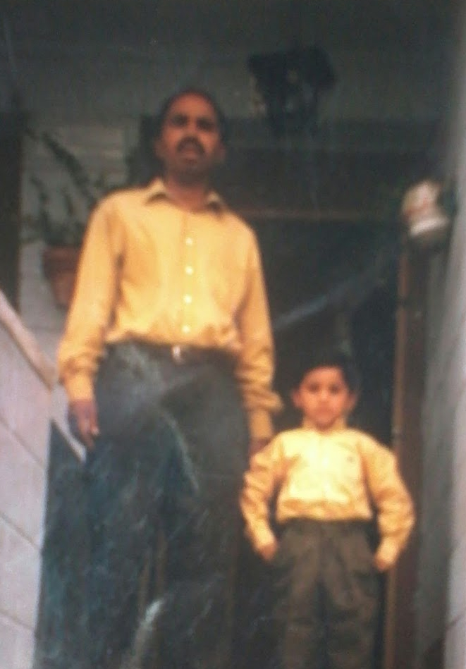

Letter to Father
As a man of his principles, you always taught me discipline, punctuality and how to be honest with you doings. When I was young you told me we grieve for ourselves because the deceased are in a better place. I know it is true that “no one can change the write of fate”, but there are still occasion when I miss your existence. But at the end, “every soul shall taste death”.
I prayed over and over for your health recovery. Upto a point that I felt my prayers are not effective enough, I cried because my prayers were not answered, but that I have ever lost my faith in God (ALLAH) as he is the best of making decisions. For years, I watched you endure horrific pain, I watched you going through sleepless nights because of the deadly disease (cancer), but what always stood up to me was your will and strength against the hard times. Till the last breath, you never made me realise that you were in pain, just smiled and tapped me on the back. Guess, it was an indication telling me to be strong for what is coming.
You were a man who sacrificed his life to help other in-need.
Sahi Muslim, “Whoever helps his brother in his time of need ALLAH will be there in his time of need”.
However, when your soul left the earth for a better afterward life, my grief became so overwhelming and suffocating that on numerous occasions I felt helpless and alone. I was convinced that deep down somewhere in my heart, I too was dying. The pain of loss was unbearable and my heart felt heavier than ever. You played a major role in my upbringing you encourage: me to do well in the future, you believed in my on every stage of life, and now that your shadow left I was devastated.
You always supported me, despite other’s opinions. You always stood rigid by your decisions. But now they you were no more I started to doubt I every decision I would make for myself and for my family. Then I started to think to myself, will I ever smile. Or would my friends ever say. “Your smile is brighter than your future”.
Another important person in my life (in-fact, in everyone’s life), is my mother.
Watching her mourn and complain is unbearable, there are occasion where I can hear her heart crying. It was tough phase for her as she had been there side-by-side till your last breath.
It is certain that as you were going through pain, so was she. She would stay up all night, be there for you whenever you shouted her name to a point that she would collapse on the sofa tirelessly.
As your health began to fail day by day, Mom was the one breathing life into you each day. You and mom showed me what true and unconditional love is. Listening to mom’s gut wrenching mourn sounds is heart-breaking. One of the life lessons you always taught me is “the quieter you become the more you hear” and that to quiet a fool with silence. In life, I come across personalities like these, but you prepared me for this. You were the biggest influence in my life
You were more than a father to me; you were my friend, at the end of the day I could share all my experience and thoughts with you without having to hesitate. Your every word was wisdom and every action was lesson to me, you guided me though life, till your last breath you guided me and told me, what is the true meaning of living? What is the purpose of our life?
As I remember you one year and half after you passing, I can still portrait a painful image of my superhero father in front of my eyes. I will always carry your pain and suffering in my heart, but more than that I will carry your words and your teachings in my life, as I have to fulfil the dreams you carried in your eyes for me.
Every day I count how long you have been gone in milestone and currently I am heading to a journey you dreamt for. As I know, no matter where you are, I will always have your blessing pouring upon me and somewhere in heaven you will be always looking down to me and sending your prayers and wishes. You are still with me, in my prayers in my smile, my laughter, my tears and in my heart.
Love never dies, it simply evolves.
I am "Raja Ali" and this is me.
![The 90's Vibe  I loved the 90's (Yeah, it is obvious because I am a 90's kid). Back then Pop, Hip-Hop and R&B were real deals. And growing up in a Spanish culture for me Enrique Iglesias sits right at the top along with DR Dre and Emiem. From Leonardo DiCaprio to Tom Cruise to David Beckam,these were celebs of the millenium world back then. Bright colours were very trendy, hence, me and my father thought to go with the trend. We rocked back in the 90's. Waking up to Tom & Jerry before going to school and ending the day by sitting the on your front door steps and enjoying the traditional pipa (sunflower seeds) with your neighbours. Everything about that time was just Aesthetic ! ... Highlights of childhood... * Inisting father to go and watch Bull-Fight * Waiting for Summer Time to go watch LaTomamtina (Tomato Festival) * Ringing people's bells and sticking chewing-gum on the bell so it remain pressed and ringing * Yeah! Clubs seemed great, sometimes even tried to sneak-in, but never had the chance to experinece it ;) * Art-Attack * DragonBall (90's - Present)](images/thumbs/Father2.jpg){kind=link}
{kind=link}